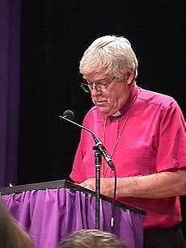

|
|
|
"Tenez compte des voix des minorités",
demande le primat anglican
au corps législatifs suprême de l'église
MONTRÉAL, le 22 mai 1998
L'archevêque Michael Peers, primat de l'Église anglicane du Canada, a engagé plus de
300 délégués du synode général, l'organisme suprême de l'église, à prêter une
attention plus grande aux minorités, dont la minorité francophone du Canada, les
communautés autochtones et les personnes marginalisées à cause de leur sexe, de leur
sexualité ou de leur âge.
Dans son allocution à la session d'ouverture du synode général, qui
se tient à Montréal du 21 au 29 mai, Mgr Peers, chef spirituel des 750,000 anglicans du
Canada, a aussi invité les délégués à se pencher sur les impacts de la mondialisation
des marchés et des accords commerciaux internationaux sur les peuples, la dette des pays
du tiers monde et l'écart grandissant entre les riches et les pauvres.
Se référant au précédent biblique du jubilée, année pendant
laquelle étaient remises toutes les dettes et pendant laquelle étaient redistribuées
les richesses, Mgr Peers a souhaité qu'afin de marquer l'inaugurantion du nouveau
millénaire, on réfléchisse à la possibilité d'annuler les dettes de certains pays les
plus pauvres.
Le synode général se réunit tous les trois ans, rassemblant des
représentants de chacun des trente diocèses anglicans du Canada afin d'aborder des
sujets relatifs à la vie de l'église et de la société.
Dans son allocution, Mgr Peers a également évoqué le dialogue entre
l'Église anglicane et l'Église luthérienne au Canada, souhaitant que les
délibérations au présent synode puissent favoriser l'entrée des deux églises en
pleine communion d'ici au prochain synode de 2001.
(Pleine communion ne signifie pas fusion entre les églises, mais la
reconnaissance mutuelle des rites, sacrements et ministères ordonnés.)
"Les luthériens et les anglicans vivent dorénavent une amitié
qui porte en elles les promesses d'un authentique partenariat," de dire Mgr Peers aux
délégués du synode.
Le primat a fait le lien enre le thème du synode général: "Lift
every voice / Faisons entendre nos voix" et celui de l'enracinement. Il a précisé
qu'il y avait 39 ans que le synode général s'était réuni à Montréal. "La voix
la moins entendues en notre sein est celle du Québec et des francophones du Canada,"
a-t-il ajouté. "Je suppose que pour plusieurs d'entre nous, le défi le plus grand
sera de se discipliner pour prêter une oreille vraiment attentive à cette voix
particulière."
Il a aussi fait référence à des questions de justice sociale et à
l'annulation de la dette des pays du tiers monde, préocupation qui occuperont sans doute
l'esprit de plus de 800 évêques anglicans de tous pays se réunissant en Angleterre pour
la conférence décennale de Lambeth, plus tard au cours de l'été.
Lors de leurs discussions et délibérations des prochains neuf jours,
Mgr Peers a prévenu les délégués contre le risque de devenir "des gens si
éloignés des réalités de leurs concitoyens qu'ils sont incapables de se rendre comte
ou de se soucier de ce qui arrive à ceux qu'influencent leurs travaux."
Parmi les affaires qui occuperont l'attention des délégués, il
faudrat, selon le primat, évaluer les progrès réalisés depuis la dernière assemblée
tenue à Ottawa en 1995, où l'église avait alors décidé de reviser ses priorités au
niveau national pour accorder dorénavent plus de place au dévelopment des relations avec
les partenaires d'outremer qu'aux affaires domestiques.
On s'attend, entre nous, à ce que les délégués discutent
d'euthanasie et de suicide assisté, du clonage et des nouvelles technologies de
reproduction, de la place des peuples autochtones dans l'Église anglicane du Canada, de
manières pour les anglicans d'entrer en relations les uns avec les autres dans le cadre
d'une société de plus en plus complexe et pluraliste, des droits humains et des
règlements relatifs à l'autorité des évêques sur les prêtres.
Par ailleurs, les délégués du synode vont également se rassembler
pour des colloques sur les relations de l'église canadienne avec ses partenaires
d'outremer, ses relations avec les autres églises et les autre communautés religieuses,
et les relations entre les trente diocèses et l'église nationale.
L'église anglicanne est la troisième communauté chrétienne en
importance au Canada.
-30- |